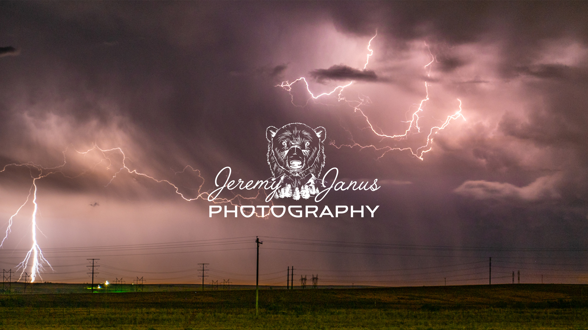

Innovation 4010 - Team Lead
The Jeremy Janus YouTube Photography Team
Team Lead: Taylor Vasquez
Team Members: Meghan Germain, Matthew Perlinger, Daniel Terry
The Jeremy Janus YouTube team was assigned to a project involving the revision and development of the Jeremy Janus Photography YouTube channel. Upon meeting with the client, Jeremy Janus, the team laid out clear and precise goals for the project over the semester. Jeremy expressed a method of organization for his existing and future files along with new digital art for his banner and thumbnails that would attract more viewers and subscribers to his YouTube channel. The success of the project required the tripartite division of the discussed objectives. The primary goal was to organize existing files on Jeremy’s hard drive as to increase the ease of workflow. Secondarily, our goal was to research alternative data storage solutions that would complement Jeremy’s transient lifestyle as well as protect his files from data corruption. Our third goal was to produce new YouTube thumbnails and banner designs to create a coercive, inviting appearance that will attract more subscribers thus opening the opportunity for future monetization on the channel
Please clink the icon below to access the Report that has all information about what was accomplished for the Jeremy Janus Photography YouTube Team.